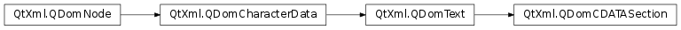

QDomCDATASection¶
Detailed Description¶
The
PySide2.QtXml.QDomCDATASectionclass represents an XML CDATA section.CDATA sections are used to escape blocks of text containing characters that would otherwise be regarded as markup. The only delimiter that is recognized in a CDATA section is the “]]>” string that terminates the CDATA section. CDATA sections cannot be nested. Their primary purpose is for including material such as XML fragments, without needing to escape all the delimiters.
Adjacent
PySide2.QtXml.QDomCDATASectionnodes are not merged by theQDomNode.normalize()function.For further information about the Document Object Model see http://www.w3.org/TR/REC-DOM-Level-1/ and http://www.w3.org/TR/DOM-Level-2-Core/. For a more general introduction of the DOM implementation see the
PySide2.QtXml.QDomDocumentdocumentation.
-
class
PySide2.QtXml.QDomCDATASection¶ -
class
PySide2.QtXml.QDomCDATASection(x) Parameters: x – PySide2.QtXml.QDomCDATASectionConstructs an empty CDATA section. To create a CDATA section with content, use the
QDomDocument.createCDATASection()function.Constructs a copy of
x.The data of the copy is shared (shallow copy): modifying one node will also change the other. If you want to make a deep copy, use
PySide2.QtXml.QDomNode.cloneNode().
© 2018 The Qt Company Ltd. Documentation contributions included herein are the copyrights of their respective owners. The documentation provided herein is licensed under the terms of the GNU Free Documentation License version 1.3 as published by the Free Software Foundation. Qt and respective logos are trademarks of The Qt Company Ltd. in Finland and/or other countries worldwide. All other trademarks are property of their respective owners.